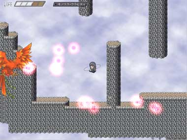

シルバーセカンド開発日誌
■
2008-01-12 (土) モノリスフィア最低限完成！▼
テストプレイ開始予定日は1/10のつもりだったのですが
ちょっと予定が遅れて現在エンディング作成中です。
モノリスフィアは、必要最低限のパーツは
エンディング以外完全に揃っている状態で、
量の面ではあとスタッフロールを入れるだけで終わりという状況です。
（もちろん文章の推敲が必要な部分がまだいっぱいあるので、
まだまだ終わりというわけではありませんけれど）
難易度は最後になってどんどんゆるめにしているつもりですが、
マウスを変えるといきなり激難易度になったりして、調整が難航しています。
作者がすでに内容を知っているという点も考慮に入れて、
幻想譚のときは初期装備しばりでテストしていたので、
今回は「一番使いにくいマウスを逆手で使ってクリアできる」
というレベルに調整しようと考えています。
ただ一番問題なのが、プレイヤーさんのマウス感度。
プレイに適した感度になっていないと致命的なので、
その辺りを自動または目安付きで調整できるシステムを
取り入れないと、大変なことになってしまいそうです。
ああー最後まで問題だらけ！うおおおおおおおおー！！■
2008-01-06 (日) モノリス・イベント作成中▼今回もモノリスフィア開発状況です。
ステージ開発は最後までとりあえず完成したので、
現在はタイトル画面からオープニング、エンディング含めた
イベントの作成に取りかかっています。
といってもアクションゲームのイベント作成なんて
あまりゴテゴテ付けすぎても邪魔になると思いますので、
必要な分だけサラリ濃厚に作っていきたいと思います。

タイトル画面です。特にこれといって凄い工夫はありません！
なおセーブデータ欄に表示されているのは、
集めたモノリスフィアの数と仲間になった女神様です。
WOLF RPGエディターについては、モノリスフィアが終わり次第
正式バージョン（Ver1.0）に修正・アップする予定です。
まずはモノリスフィアを締め切りに間に合わせるのが先なので
暗号化にご期待の皆さまはあともう少しお待ちください。
それと年賀状を送ってくださった皆さま、および
明けましてコメントを送ってくださった皆さま、
本当にありがとうございます。
今後もボチボチ、やれる分だけがんばっていきたいと思いますので、
どうかよろしくお願いします。 ■
2008-01-01 (火) 明けまして＆追い込み▼年越し瞬間0:00更新！（でも自動）
2008年、新年明けましておめでとうございます！
去年は本当に色んな方にお世話になりました、
今年も色々お世話をお掛けすると思いますが、
どうかよろしくお願いします！

9周年記念、兼、年賀状落書き。
こんなのでも持っていきたい方はお好きにどうぞ！
また拍手コメントでお祝いの言葉や愛の告白（？）をくださった皆さま
本当にありがとうございます。とても開発の励みになります。
シングルベル（※一人って意味ですよ！）の人ばんざーい！
モノリスフィア頑張ります。
と思ってたらその中に家族の人のコメントが混ざってました、
インフルエンザはタミフル飲んでたった一日で治ったそうです。
すごいやタミフル。
モノリスフィアはいよいよ追い込みに入ってきました。
友達にプレイしてもらった意見を参考に、たった10分修正しただけでも
プレイアビリティが大幅に改良されてしまったりするので、
改めて調整の恐ろしさを思い知ります。
ステージそのものは95％が完成していて、
あとはイベントやシナリオ、グラフィックを
乗せるだけというところに来ています。
今回は色々と作業を手伝っていただいている分、
肝心なところに意識を集中できるので、
作業の高速化ができてとても助かってます。
ただ友達の率直な感想で「最初がとっつきにくい」というのがあり、
まずそこをどうにかしないと評価を得るのは難しいと思っています。
それと同時に、マウスだけのアクションゲームを
誰も作らない理由が分かりました。
あまりにもアナログ操作すぎて、一般向けに
とっつきやすくするまでがすごく難しいのです。
友達もいつか似たような案を考えてたらしいのですが、
実際作ってみると問題がいっぱい出てくるのは研究と同じでした。
その辺りは徹底的に調整していきたいと思います。
身近に例が存在しないものを作るのは、
とても挑戦的で、刺激的で、楽しいことです。
そういう意味で、ゲーム開発は常に己の力の限界や自分らしさを
試し続けることができる場として、非常に適したものだと思っています。
今年も一年、コツコツと地道に頑張ろうと思いますので、
暖かく見守っていただけますと幸いです。
2008年、皆さんにとって良い一年になりますように。 ■
2007-12-17 (月) 現状報告：新作＆ウディタ▼
落書き。新作モノリスフィアの主人公モノリス様。
最近開発と関係ないことばかり書いてる気がしますが
そっちの方が評判がいいらしいことに気付きました、
開発といっても作ってる最中のゲームは面白い部分のネタを
バラせないし、結局システム紹介にしかならないので、
そういう意味では既成の作品の裏側を振り返る方が
面白いと思います。書いてて楽しいですし。
今回は現状報告です。
コンパク応募予定の作品、モノリスフィアは
ステージそのものはたいがい完成して、
いよいよ終わりが見えてきたかな、
というところまで開発が進んでいます。
ゲームの難易度なんですが、ゲーム後半は作者でも
いちかばちかでないと最高ランククリアができない程度の
難易度になりつつあります。
マウスオンリーということは操作もアナログ的になるので
プレイの上手さが自分の健康状態に大きく左右されます。
もう少し最大難易度を簡単にするか、もしくはそのままで
救済措置を設けるか、どうしようか考え中です。
もっとも、コンティニューを繰り返すと
難易度が低下していくのはいつも通りなので
クリアできないということはないと思います。
もちろんノーコンティニュー特典もありますので
エキスパートの人もご安心を。
それとWOLF RPGエディターについてですが、
Ver1.0で暗号化機能を付属させて正式公開にしようと思っています。
全機能を無料で使えるようにすることを決定しましたので
データ暗号化も自由に使えるようになる予定です。
どうせライセンス制にしたって、RPGツクールVXが出た今では
もともと使う人少ない → ライセンス売れない →
使う人少ない → 結局無料化する → やっぱり使う人増えねえ！
という流れになることは火を見るより明らかなので、
いさぎよく全機能を解放することに決めました！
未練たらしくカンパ受け付けくらいするかもしれませんが
その辺りはどうか許してやってください。
最後にもう一つ、あと1週間で、
SilverSecond（このサイト）がとうとう9周年になります。
ここまでやってこられたのも、皆さんのおかげです、
いつも来てくださっている皆さまには感謝が尽きません！
これからもどうか暖かく見守ってくださると幸いです。
本当にありがとうございます！■
2007-11-23 (金) モノリスフィア開発2▼
ヘビの中ボス、動作アルゴリズム頑張りました。
このヘビなど、一部ボスのグラフィックは
すうさんに描いていただきました！
アクションゲームのボスアルゴリズム構築は
RPGに比べて難しいので、やってて楽しいです。
これまで遊んできたコンシューマゲームの
敵キャラを思い出しつつ、作る身になって
よくあれだけ色々うまいこと動かしてるなあと感心しました。
特に主人公の動きに反応して動くタイプは難しいです、
「主人公とある程度距離を取ろうとする」といったアルゴリズムは
言葉で言うのは簡単なんですが、自然っぽく作るのは
それなりに工夫が必要です。
こういった部分で、いい脳の体操になっています。
ちなみにステージ開発の進みは現在45％くらいです。
基礎システムさえできてしまえば後はステージを作るだけなので
しばらくモノリスフィアに集中すればここから先は
どんどんスピードアップできそうです。
なお、モノリスフィアはコンテストパーク投稿作品なので
久しぶりのフリーウェアとなります、お楽しみに！■
2007-11-18 (日) モノスフィ開発続行▼
ステージ選択画面です。
モノリスフィアはステージクリア型のアクションゲームです。
ゲームの目的は5つの世界に飛び散った
モノリスフィアというアイテムを集めること。
各ステージには複数のクリア条件が存在し、
各々の条件を満たしてクリアすることによって
モノリスフィアが貯まっていきます。
直接的な例を挙げるとマリオ64形式！
上手じゃない人は上手じゃないなりにほどほどにプレイできて
上手な人はパーフェクトプレイを狙って遊べるという
調整のしやすい方式だと思いますので採用！
ただ、テストしてもらうたびに「操作が難しい」という
ご指摘を受けるので、色々と試行錯誤の毎日です。
参考になるゲームがないのでどう対処したものか難しい！
ひょっとしたら大失敗するかも！と思いつつ
少しでも遊びやすくなるよう必死に考えています。
でも既存のゲーム焼き直してもしょうがないよなあという
思いもあるので、たまには大失敗覚悟で
新しいことにも挑戦するほうが楽しいです。
どこまでやれるかなあ。
「モノリスフィア」の主人公は女神モノリスといいます。
私がSF好きで、かつ「主人公が黒っぽいから」
というそれだけの理由でこれまた女性らしくない名前が付けられました。
何というかスケイルの二の舞です。
でも北欧神話の「ベルダンディー」が女神の名前だというのを
聞いたときから、女神の名前なんてもう何でもいいやと思いました。
最初に聞いたときダンディーな男性を想像していたんですが、
全然違ってて驚きました、まさかダンディーが女性名の一部とは！
つまりマッスルダンディー（女性・15歳）というのもありなんですね！？
親の顔が見てみたい名前ですけれど。しかも本人の顔も濃そう。
ちなみに超未来世界だとか宇宙船が出てくるような
SF的作品にも憧れるのですが、
だからといってこれといった深い科学的考証もできないので
悶々とファンタジーを作る毎日です。
ファンタジーは細かい考証が大雑把でも
ストーリーが組めるからいいですね！
ちなみに「モノリスフィア」では女神様がスーパーで卵買ったりしてます。
ファンタジィィー！！！！調子がいいときは日誌を書くヒマもなくなってしまいます、
久しぶりの更新です。

初アクションゲーム、モノリスフィア開発続行中です。
左のボスグラフィックはすうさんに作っていただきました。
でもこんなに弾が出てると普通に避けられないので
公開版ではやりませんよ！
マニア向けモードとしては付けてもいいかもしれませんけれど。
今回はモノリスフィアの操作方法を紹介します。
マウス左ボタン
ドラッグして離すと、ドラッグ距離に応じて飛ぶ
真ん中ホイール回転 or 上下キー
所持スキルの切り替え
マウス右ボタン
スキルの発動
以上です。非常に簡単ですが、
慣れないと思い通りに操るのはなかなか難しめです。
もちろん最初は簡単なステージなので、
徐々に慣れていけるようにはしていますが、
ゲーム開発に慣れたつもりでも一発目に作ったバージョンは
相当難しい難易度で作ってしまいます。
アクションみたいな感性が要求されるゲームの
レベル設定はいつまで経っても難しいです。
これらと並行してシル見顔グラフィックのリメイクや
WOLF RPGエディターの改造＆ヘルプ作りも進めています。
複数の作業を並行してやった方が気分転換もしやすいので、
うんうんうなっている時間が減っていい感じです。
ただウルフエディタ開発では、プログラム的に
未だ分からないところも結構色々あって、
たとえばウルフエディタのイベントエディタやら
マップチップ選択ウィンドウやらが他のアプリケーションの
上に表示されてしまうのが未だに直りません。
エディタの開発にはMFCを使用しているのですが、
topmost（＝全アプリ中で最前面表示）でウィンドウ作るだけじゃ
やっぱダメだろうなあと思いつつも、
「常にメインウィンドウの上に子ウィンドウを出しつつ
最前面には出さないようにする」としようとするのがこれまた難関！
最悪直らなくてもいいかあ、なんて思ってるんですが
ツールとしてはなかなか格好悪いです。
色々調べてみるものの見つからず、検索の仕方が悪いのかもしれません。
まだまだ力不足を感じる今日この頃。
情報はどこかに転がってるハズなのに見つからないのがもどかしい。
■
2007-09-30 (日) 新作ﾀｲﾄﾙはモノリスフィア▼
主人公＆動物の部下というキャラ構成、なんだかいつも通りですが
やっぱり使いやすい組み合わせです。
新作のタイトルは「モノリスフィア（仮）」となりました。
ホイール付きマウスでプレイすることを想定していますが、
ホイールがない人はホイールの上下操作を、
キーボード上下キーとして操作できるようにしています。
今どきホイール付きマウスがないご家庭って
あんまりないとは思いますが、操作できないと詰みますからね！
こういう対応はなるべくやっていきたいと思ってます。■
2007-09-24 (月) プロトタイプゲーム画像▼
ついに出ました開発中プロトタイプのゲーム画像！
本作はマウスのみで遊ぶスピーディーなアクションゲームです。
某ソニックもびっくりの速さ。
プログラミングができるようになるとホント何でもできるので
昔の妄想がどんどん実現できて楽しいです。
幻想譚では、難易度が簡単すぎるというコメントをいただいたので
今度はアクションゲーム苦手な人からマニアックな人まで
全対応で遊べるようなゲームを作りたいと思います。
でもアクションゲームのレベルデザインって難しい！
自分のことですからクリアできないゲームはたぶん作りませんけれど、
簡単なだけでなく達成感が得られるような作りにするとなると、
論理でどうこういう問題ではなく感覚的になってくるので難しい！
でも自分で遊び直したときにちょっと面白いか面白くないかは
何となくつかめるので、調整はよくがんばりたいと思います。
ちなみに、アクシデントがまったくない、かつ
調整の時間を取らないとしても
最速であと50日はかかる計算になったので、
11月15日のコンパクには間に合わないと思います。ちょっと残念。
でも次までの時間ができるので、最高のゲームにしたいと思ってます。
ちなみになぜ50日かというと、ステージ1個で1日かかったと想定して、
作る予定のステージがあと約40ステージ残っているのと、
足りないグラフィックを作るのにあと10日かかると見込んでいるからです。
でもこんな風に開発が進むのは本当に最速の場合で、
作っている最中にとんでもないところから
間違いやミスが見つかったりするのは日常茶飯事なので、
予定を立てても必ずそれ以上に時間がかかります。
それを考えると、予定に間に合わせられるゲーム企業さんは
凄いなあと思います。
でもアマチュアならではの武器もあるので、自分はそれを活かします。
時間無視で徹底的に調整しようと思えばやれる、
というのは一つの強みです。
Copyright © SmokingWOLF / Silver Second
 カテゴリ: ﾓﾉﾘｽﾌｨｱ
カテゴリ: ﾓﾉﾘｽﾌｨｱ カテゴリ: ﾓﾉﾘｽﾌｨｱ
カテゴリ: ﾓﾉﾘｽﾌｨｱ